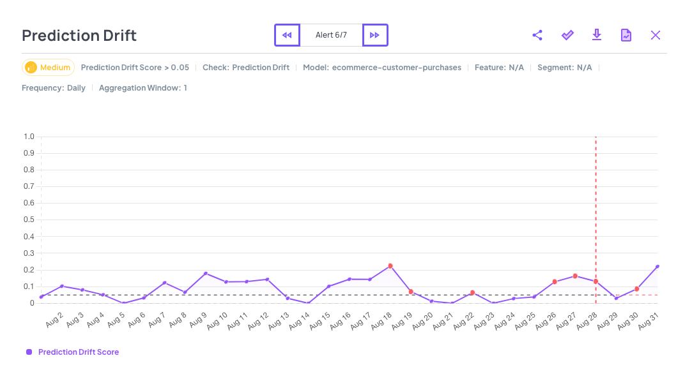
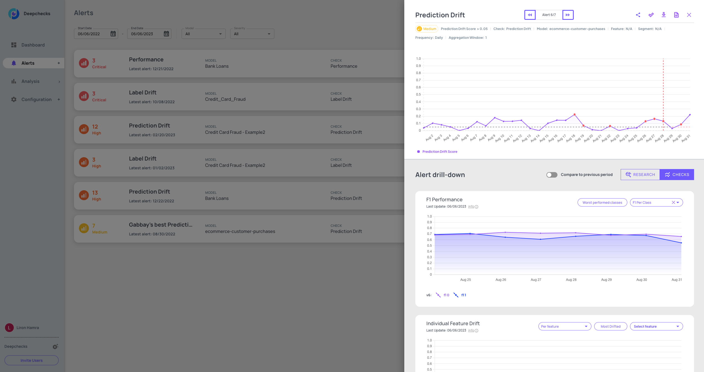
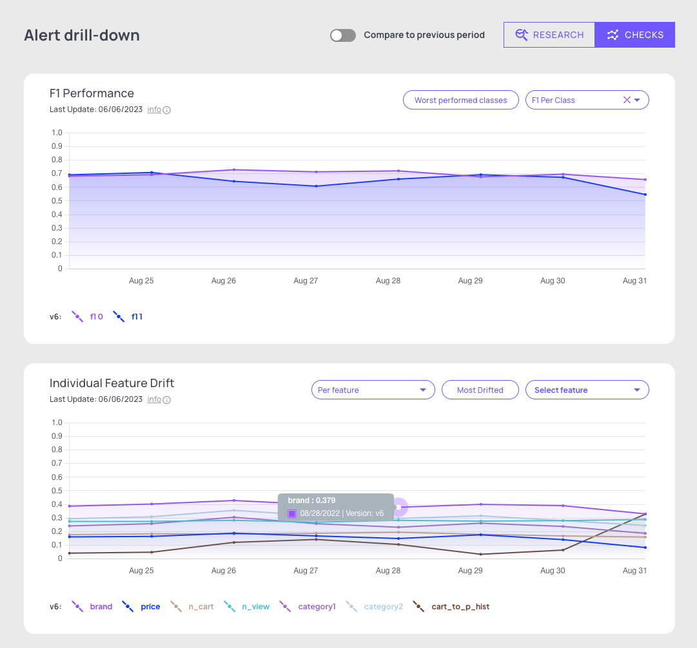

Alerts#
Alerts Lifecycle#
Alerts rules are all linked to a monitor. by default all created monitors will be visible in the dashboard, you can hide the monitor by unselecting “Show in dashboard” in the alert edit menu, “Monitor data” section. An activated alert is shown in the “Alerts” view as an active alert until you resolve it. You can choose to resolve all alerts related to an alert rule, by using the “Resolve all” button, or resolve them one by one in the alerts drill-down.
Alerts Drill-down#
When you click an alert, the alerts drill-down screen opens to the right, providing you with the ability to review the alerts one by one, to dive in and analyze their root cause, and to resolve them.
Viewing multiple alerts on a monitor#
Using the << and >> buttons you can switch between alerts that were raised over time on the same monitor. Resolve an alert by pressing the “V” button. Once you want to analyze a specific occurence, you have two key options: use the research/checks view to find a granular segment and/or additional metrics which are related to the cause of the alert. In addition, you can further analyze the root cause of the alert by either running the full test suite (Deepchecks testing) or using your notebook or other preferred Python code environment to run your code with the data in the date/segment where the alert occurred.
{kind=link}
Research view#
When you need to figure out if there is a specific feature and/or segment where the results of the alert’s check are, the research view is most likely the best place to focus on. Once you have selected an alert, the drill down shows the check results, segmented by the values of the most important feature. The feature drop down is sorted by the descending order of feature importance. The default segment is “All data” and it shows the results of the alert’s check for that segment. You can choose a different features and segment or change the check as part of the analysis process.
{kind=link}
Checks view#
The checks view provides a way to discover what else might have happened when the alert was activated. It shows the results of all checks around the time that the alert occurred. You can then perform more detailed analysis by looking at the results of the checks per feature/per class. An useful way to figuring out what happened is to compare the check results to the previous period.
{kind=link}
Download code#
Once you have found a segment/check that seems to be the root cause of the issue, you might want to run additional tests and get to the root cause on your own, by running further analysis logic and visualizations on the relevant data, in your preferred coding environment. Deepchecks enables you to download code with which you can access the data through the SDK, and use the deepchecks testing package along with your own code to further inspect the issue. Reminder: you will need access to your API key in order to run the code, as it interacts with the Deepchecks server. Your API key can be generated in the Configuration tab in the app.
Run test suite#
Another way of getting further insights for understanding the root cause of your issue is to run the full test suite. Its result is a detailed view of many Check’s results that ran on the selected point in time, all combined into a single html report. The output is of a preconfigured Deepchecks Testing Suite, similar to the Suites that are compatible for running within your testing and CI/CD environments.
Resolved Alerts#
Shows all the resolved alerts and gives you the ability to reactivate them.